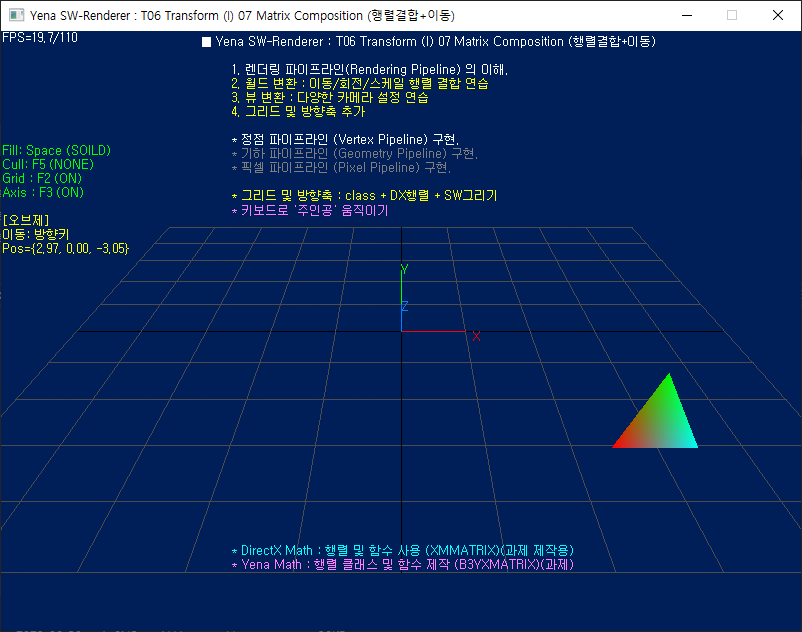

T06 Transform (I) 07 Matrix Composition (Move) 02 (Grid/Axis)(Class)(DX.Math)
Yena SW Renderer Tutorials v1.5.x

예제 내용
렌더링 파이프라인 구축
- <GDI> 사용 버전 ★
- <DX> 수학 라이브러리 사용 버전 ★
- <Yena> 수학 라이브러리 제작 및 적용.
- 정점 파이프라인 Vertex-PipeLine
- 월드 변환 : 회전 테스트
- 월드 변환 행렬 결합 연습
- SRT, STR 결합 연습
- "주인공", 키보드로 움직이기 ★
- 방향축/그리드 추가
- 3D 월드 공간 식별용
- 외부 클래스 버전
- class B3Grid
- class B3Axis
목표 및 과제
- 변환 파이프라인의 이해
todo
- Todo
- ⭐ 변환행렬 결합 실습
- 주인공 키보드로 움직이기 : "월드변환" ★
- 뷰 변환 적용
- 투영 변환 적용
- Todo
- ⭐ 수학 라이브러리 제작
- 행렬 클래스 개정
- 행렬 함수 추가 제작 ★
- B3YXVec3Dot
- B3YXVec3Cross
- B3YXVec3Normalize
- B3YXVec3Project ★
- B3YXVec3Transform ★
- B3YXVec3TransformCoord ★
- B3YXMatrixMultiply ★
- B3YXVec4Transform
- B3YXMatrixTranslation
- B3YXMatrixScaling
- B3YXMatrixRotationX
- B3YXMatrixRotationY
- B3YXMatrixRotationZ
- B3YXMatrixLookAtLH
- B3YXMatrixPerspectiveFovLH
- 기타 필요 기능 확장 하기
- Todo
- ⭐ 라인 그리기 개정
- B3YenaGraphicsEngine9::_Line
- B3YenaGraphicsEngine9::_VLine
- B3YenaGraphicsEngine9::_HLine
- Todo
- ⭐ DirectX 수학 클래스 사용하지 않기.★
기본 제공
- 애플리케이션 프레임워크 생성.
- 메세지 펌핑 처리 개선.
- 32/64비트 지원
- 작업영역 색상변경 (DarkGray)
- 윈도 중앙 이동
프로젝트 개요
- 기본 구성
- Windows Desktop Application
- 32/64비트 지원
- 유니코드 버전 (UTF-8)
- 예제 소스 구성
- 상세내역
-문서 끝- 2025 ⓒ Kihong.Kim / onlys.nosp@m.onim.nosp@m.@gmai.nosp@m.l.co.nosp@m.m
 1.14.0
1.14.0